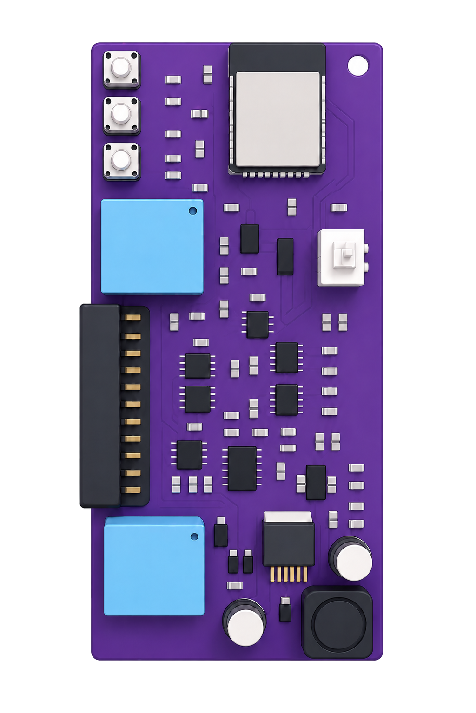

Este manual cubre el montaje y el cableado de una unidad MetriCAN en el vehículo o equipo: alimentación, buses CAN, puertos serie, RS485, 1-Wire, entrada digital y relés. Termina con la verificación del primer encendido, para no bajarse de la máquina sin saber si quedó funcionando.

Trabaja siempre con la alimentación desconectada. Verifica la polaridad antes de energizar: el equipo protege contra inversión, pero la protección es un seguro, no un permiso. Temperatura de operación: −40 °C a +85 °C. Monta la unidad en un punto seco, fuera de la trayectoria de agua y lejos de fuentes de calor directo.
Los contactos se distribuyen en dos filas de doce. El color indicado es el color real del cable en el arnés, y cada cable viene además rotulado con su función.
El diagrama está dibujado mirando el conector del equipo. Visto desde el lado del arnés, el orden de las columnas se invierte como en un espejo. Guíate siempre por el rótulo del cable, no por la posición: el rótulo no se puede leer al revés.
La referencia A/B designa la fila superior e inferior del diagrama y es una convención de este documento para poder nombrar cada contacto. No es la numeración del fabricante del conector: en terreno, la referencia válida es el rótulo del cable.
| Ref. | Señal | Color de cable | Función |
|---|---|---|---|
| A11 | PWR (rotulado BAT/IGN) | Rojo | Alimentación dedicada del equipo, 9–32 V DC permanente |
| B10 | GND | Negro | Masa de referencia — común a alimentación, buses y E/S |
| A07 | CAN_1 · CAN H | Azul | Línea alta del bus CAN 1 |
| B07 | CAN_1 · CAN L | Naranjo | Línea baja del bus CAN 1 |
| A06 | CAN_2 · CAN H | Azul | Línea alta del bus CAN 2 — canal independiente |
| B06 | CAN_2 · CAN L | Naranjo | Línea baja del bus CAN 2 |
| B03 | UART_1 · TX | Blanco | Transmisión serie — salida de datos al gateway por defecto |
| B04 | UART_1 · RX | Azul | Recepción serie — comandos y tramas del AVL |
| A02 | UART_2 · TX | Blanco | Transmisión del segundo puerto serie |
| A03 | UART_2 · RX | Azul | Recepción del segundo puerto serie |
| A08 | UART_3(A) · TX | Blanco | Transmisión del tercer puerto serie |
| B08 | UART_3(A) · RX | Azul | Recepción del tercer puerto serie |
| A09 | UART_4(B) · TX | Blanco | Transmisión del cuarto puerto serie |
| B09 | UART_4(B) · RX | Azul | Recepción del cuarto puerto serie |
| A05 | 485 B | Naranjo | Línea B del bus RS485 — Modbus RTU |
| B05 | 485 A | Gris | Línea A del bus RS485 |
| A04 | 1-WIRE | Morado | Bus 1-Wire — iButton y sensores de temperatura |
| A10 | INPUT | Amarillo | Entrada digital de propósito general — ignición u otra señal |
| A12 | RELE_1 · COMÚN | Gris | Contacto común del relé 1 |
| B11 | RELE_1 · NO | Verde | Normalmente abierto del relé 1 |
| B12 | RELE_1 · NC | Naranjo | Normalmente cerrado del relé 1 |
| B01 | RELE_2 · COMÚN | Gris | Contacto común del relé 2 |
| A01 | RELE_2 · NO | Verde | Normalmente abierto del relé 2 |
| B02 | RELE_2 · NC | Naranjo | Normalmente cerrado del relé 2 |
Los dos canales son independientes y se leen en simultáneo. Cada uno se conecta en paralelo al bus existente: MetriCAN escucha, no interrumpe el tramo.
Nunca abras el par CAN para intercalar el equipo. Un bus interrumpido deja sin comunicación a los módulos del vehículo. La conexión es en derivación, con el ramal más corto que la instalación permita.
El bus del vehículo ya trae sus dos resistencias de 120 Ω en los extremos. No agregues una tercera: la impedancia cae y aparecen errores de trama que se confunden con un problema de cableado.
El equipo expone cuatro puertos serie, todos en nivel RS232. El parámetro de configuración uart_out decide por cuál sale la trama de datos hacia el AVL, datalogger, modem o PLC.
Los cuatro puertos son RS232, no TTL. Conectar un periférico de 3,3 V o 5 V TTL directamente a estas líneas daña el periférico, el MetriCAN o ambos. Si el equipo a conectar es TTL, intercala un conversor de nivel RS232 ↔ TTL.
| Puerto | uart_out | Uso habitual |
|---|---|---|
| UART_1 | "1" | Salida al gateway por defecto — es el valor que traen todas las configuraciones de fábrica. También es el canal de comandos y telemetría |
| UART_2 | "2" | Periférico adicional o salida alternativa |
| UART_3(A) | "3" | Periférico sobre el expansor serie — canal A |
| UART_4(B) | "4" | Periférico sobre el expansor serie — canal B |
El TX del MetriCAN va al RX del equipo receptor, y el RX del MetriCAN al TX del equipo. Las dos masas deben estar unidas. Si no ves datos y el LED indica actividad CAN, lo primero que se revisa es que TX y RX no estén cruzados al revés.
Dos salidas de relé configurables, 10 A @ 30 V DC. Cada una entrega los tres contactos: COMÚN, NO (normalmente abierto) y NC (normalmente cerrado). Con el equipo sin energía, el común queda unido al NC.
Si el relé va a cortar una función del vehículo, cablea por el NC de modo que la pérdida de alimentación del MetriCAN no deje la función cortada. Las reglas que gobiernan cada relé se definen en el Configurador, con debounce y hold mínimo para evitar accionamientos por un parpadeo de la señal.
El LED de estado dice en qué está el equipo sin necesidad de conectar un PC. Estos son los cuatro patrones, en orden de prioridad: si hay una actualización en curso, ese patrón manda sobre los demás.
| Patrón | Significado | Qué hacer |
|---|---|---|
| Fijo encendido | Equipo operativo, sin tráfico CAN en los últimos 3 segundos | Normal con el vehículo detenido. Si persiste con el vehículo en marcha, revisa el cableado CAN |
| Parpadeo lento 500 ms | Recibiendo datos del bus CAN | Es el estado esperado en operación. Nada que hacer |
| Doble destello cada segundo | Conectando a WiFi | Sólo en puesta a punto o diagnóstico. Si no termina de conectar, revisa la red configurada |
| Parpadeo rápido 100 ms | Actualización en curso | No cortes la alimentación hasta que el patrón cambie |
| Síntoma | Dónde mirar primero |
|---|---|
| LED apagado | Alimentación o fusible. El LED no depende de la configuración |
| LED fijo en marcha | No llega tráfico CAN: par invertido, ramal mal conectado o bus equivocado |
| Sin datos en el gateway | TX/RX cruzados, uart_out apuntando a otro puerto, o masas no unidas |
| Lecturas intermitentes | Masa deficiente. Es la causa más frecuente y la que menos lo parece |
| Relé que actúa solo | Regla sin debounce suficiente para la señal que la dispara |
Escríbenos con el identificador del equipo, la versión de firmware y qué patrón muestra el LED. Con esos tres datos el diagnóstico arranca de inmediato.